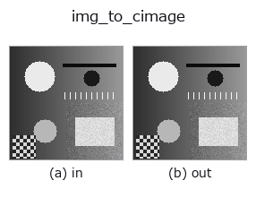

bridge op• 資料種類:image → cimage
• 呼叫:fullseye.apply(img, "img_to_cimage", a=0.5, b=0.5)(2-D 的模型是一張圖 + 兩個純量旋鈕 a,b∈[0,1])

*圖為在 128×128 合成輸入上實際執行的輸出。左為輸入，右為輸出。點雲以俯視散點顯示(亮度 = z)，一維序列為折線，體資料為沿 z 的最大值投影，影片為中間影格，複數影像為振幅；無法成像的回傳值直接顯示數值。*
掃描旋鈕 a(0.1 / 0.5 / 0.9，另一旋鈕取預設):
▸ img_to_cimage: 旋鈕 a 掃描 (文件網站)
掃描旋鈕 b(0.1 / 0.5 / 0.9，另一旋鈕取預設):
▸ img_to_cimage: 旋鈕 b 掃描 (文件網站)
換別的影像(合成場景 / 照片 / 硬幣。上排為輸入，下排為對應輸出。旋鈕取預設):
▸ img_to_cimage: 其他輸入影像 (文件網站)
*第 4 欄是彩色 (H,W,3) 輸入。此運算子能正確處理顏色而不跨通道(不把顏色通道當作第三個空間軸摺積)。*
以影像為振幅、以像素值和傾斜給出相位，產生複數場 (H,W) complex128。
field = img * exp(i * (2π * a * img + 2π * (b - 0.5) * 8 * x / W))。振幅 = 像素值(以穿透率、孔徑來讀)，相位是 與值成正比的分量(作為相位物體的厚度)與 x 方向的線性傾斜(平面波的入射角)之和。是角頻譜法 tb_angular_spectrum_propagate 與 tb_cx_* 族所接受的複數影像的合成器。
• a → 相位深度 2π * a * img(a=0 時為實場，a=0.5 時最大為 π)。
• b → 傾斜。在 x 方向乘上 (b - 0.5) * 8 個週期的線性相位(b=0.5 時傾斜為 0。8 是「128 px 內 8 條條紋」的參考值)。
• 回傳值: (H, W) complex128。|field| = img，arg 如上式。
• 值為 0 的像素無法定義相位(0 * exp(iφ) = 0)。
• 範例資料目錄(下載 URL / 授權) —— 2-D 用 skimage.data(BSD/公有領域)加合成圖,3-D 給出真實資料源(Stanford/PDS 等)的下載 URL。
• 運算子來歷與參考文獻 —— 該運算子族所依據的研究/方法出處。
• 演算法的正典(作者、年份)與用途見上面的族使用指南。
下面的程式已確認可以執行(與圖相同的輸入)。在 Studio 說明中，此區塊會變成按鈕，可當場載入並執行。
img_to_cimage 0.50 0.50
• gallery2d_bridge — py -3.11 examples/gallery2d_bridge.py
cimage 作為輸入)identity · tb_cx_ifft · tb_cx_magnitude · tb_cx_phase · tb_cx_real · tb_cx_imag · tb_cx_log_magnitude · tb_cx_apply_transfer_function
bridge)img_to_points · img_to_keypoints · img_to_signal · img_to_projection_profile · img_to_counts · img_to_matrix · img_to_video · img_to_volume
*Provenance: ops.py — 2D 運算子登記表。本條目由 tools/opdocs.py md 自動產生(請勿手動編輯)。*
© 2026 Kazufumi Furuse — Fullseye operator documentation. Licensed under Apache-2.0.